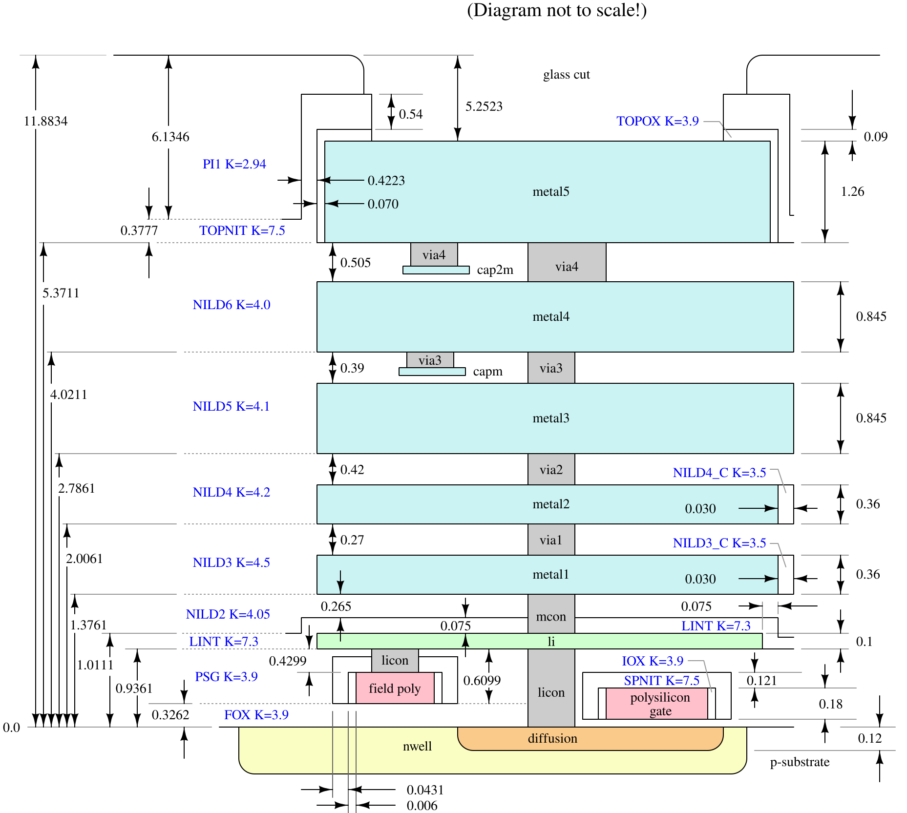

How a Die Is Built: SKY130 Layers & Lithography
A die is built on the wafer surface one patterned layer at a time: transistors first, then local interconnect and five levels of metal wiring. The official SKY130 stack diagram shows every layer with its thickness.
What you will learn
- Separate front-end (device) layers from back-end (wiring) layers.
- Explain how one photolithography cycle turns a drawn layout layer into a physical pattern.
- Read the official SKY130 process stack and name each conductor, contact and dielectric.
1. Front end: the devices. Back end: the wiring.
A die is built on the polished top surface of the wafer, one patterned layer at a time. The work splits into two halves. The front end of line (FEOL) builds the devices in and on the silicon: wells (deep regions doped n-type or p-type), isolation oxide between devices, the very thin gate oxide, the polysilicon (“poly”) gates, and the heavily doped diffusion regions that become sources and drains (lesson 4).
The back end of line (BEOL) builds everything above the devices: contacts down to diffusion and poly, a local interconnect layer, five metal layers, the vias that join one metal layer to the next, the insulating dielectric that fills every gap, and a protective passivation on top. The passivation is opened only over the pads, where wires or bumps will attach (lesson 5).

2. The same stack, to scale
Two things stand out. First, the whole wiring stack is thin: the top of the polyimide is 11.88 µm above the silicon surface, against a wafer 725 µm thick. Second, the layers are not equal. Local interconnect (li1) is 0.1 µm thick, met1 and met2 are 0.36 µm, met3 and met4 are 0.845 µm, and met5 is 1.26 µm. A thicker wire of the same width has lower resistance, which is why long wires, clocks and the power grid use the upper metals (lesson 15).
| Layer | Stack diagram thickness | HD tech LEF thickness | HD tech LEF sheet resistance | Preferred direction |
|---|---|---|---|---|
| li1 | 0.1 µm | 0.1 µm | 12.2 Ω/□ | vertical |
| met1 | 0.36 µm | 0.35 µm | 0.125 Ω/□ | horizontal |
| met2 | 0.36 µm | 0.35 µm | 0.125 Ω/□ | vertical |
| met3 | 0.845 µm | 0.8 µm | 0.047 Ω/□ | horizontal |
| met4 | 0.845 µm | 0.8 µm | 0.047 Ω/□ | vertical |
| met5 | 1.26 µm | 1.2 µm | 0.0285 Ω/□ | horizontal |
The two thickness columns differ on purpose. The stack diagram gives nominal process thicknesses. The high-density library’s technology LEF (Library Exchange Format) file — the file routers read — lists slightly smaller values for its own resistance and antenna estimates. Use the number that belongs to the calculation in front of you, and say which one you used. Sheet resistance in ohms per square (Ω/□) is explained in lesson 28: a wire’s resistance is the sheet resistance times its length divided by its width. A 100 µm-long, 0.17 µm-wide li1 wire is 12.2 × 100 / 0.17 ≈ 7.2 kΩ; the same wire on met1 at 0.14 µm wide is about 89 Ω.
3. Lithography: one layer, one mask
Each patterned layer begins as a set of polygons in the layout database (lesson 8). A mask shop turns each layer into a photomask (or reticle): a quartz plate carrying an opaque pattern. In the fab, the wafer is coated with light-sensitive photoresist and exposed through the mask in a stepper or scanner, which projects a reduced image of the reticle onto one field and then steps to the next. Developing removes the resist where the pattern says it should go. The uncovered material is then etched away, or implanted with dopant, or used as a template for new material; finally the resist is stripped.
Every patterned layer repeats that cycle. SkyWater’s CEO has described the fab’s capacity in terms of 200 mm wafers with about 30 mask layers, which gives a sense of how many cycles a mixed-signal process involves. The layers a designer draws and the masks the foundry makes are related by rules; some masks are generated from combinations of drawn layers rather than drawn directly.
4. What “130 nm” does and does not mean
A process name is a label, not a single dimension. The SKY130 technology files describe it as a
hybrid 0.18 µm / 0.13 µm process. The 1.8 V core transistors have a minimum gate length of 0.15 µm — the
l=0.15 µm used by both transistors in inv_1. Each layer also has its own minimum width and
spacing: 0.14 µm for met1 and 1.6 µm for met5 in the HD tech LEF. When a lesson quotes a dimension, it names the
layer and the file it came from.
5. The SKY130 layer names you will see
Layout files identify each layer by a pair of numbers, its GDS (Graphic Data System, the layout file format) layer and datatype. The table lists the drawing layers used most in this course; the PDK documentation lists all of them.
| SKY130 layer | GDS layer/datatype | What it is | More in |
|---|---|---|---|
| nwell | 64/20 | n-type well that holds PMOS (p-channel) transistors | lesson 4 |
| diff | 65/20 | active area: where transistor channels, sources and drains form | lesson 16 |
| tap | 65/44 | diffusion that ties a well or the substrate to a supply rail | lesson 48 |
| nsdm / psdm | 93/44 / 94/20 | n+ and p+ source/drain implant regions | lesson 16 |
| poly | 66/20 | polysilicon: transistor gates and very short wires | lesson 16 |
| licon1 | 66/44 | contact from diffusion, tap or poly up to li1 | lesson 16 |
| li1 | 67/20 | local interconnect (titanium nitride), 0.1 µm thick | lesson 16 |
| mcon | 67/44 | contact from li1 up to met1 | lesson 15 |
| met1 … met5 | 68/20 … 72/20 | routing metals | lesson 15 |
| via … via4 | 68/44 … 71/44 | cuts between adjacent metals | lesson 15 |
| capm / cap2m | 89/44 / 97/44 | MiM capacitor plates over met3 / met4 | lesson 78 |
| pad | 76/20 | passivation opening over a pad | lesson 67 |
6. Top view and cross-section
A layout editor shows all of these layers from above, overlaid in different colors. You never see depth directly; you read it from the colors. A cross-section like Figure 1 is a vertical slice through one line of that top view. Lesson 15 reads the routing stack in detail, and lesson 16 builds an inverter layer by layer in exactly this top-down style.
Check your understanding — can two met2 wires cross each other?
No. Shapes on the same conducting layer that touch are the same electrical node. Two different nets cross by putting one of them on another layer, joined at each end with vias. That is why routing uses alternating preferred directions on adjacent metals.
Check your understanding — a signal goes from a poly gate up to met3. Which cuts and landing shapes does it pass through?
poly → licon1 → li1 → mcon → met1 → via → met2 → via2 → met3. Each cut connects only adjacent layers, so li1, met1 and met2 each need a landing shape even if no long wire uses them.
Key takeaways
- FEOL builds the devices (wells, oxide, poly, diffusion); BEOL builds contacts, li1, met1–met5, vias, dielectric and passivation.
- SKY130 nominal thicknesses: li1 0.1 µm, met1–met2 0.36 µm, met3–met4 0.845 µm, met5 1.26 µm; the HD tech LEF uses 0.35, 0.8 and 1.2 µm for its estimates.
- Each patterned layer is one lithography cycle: coat, expose through a mask, develop, etch or implant, strip.
- “130 nm” is a process label; the 1.8 V core transistor’s minimum gate length is 0.15 µm.
- Layout layers are identified by GDS layer/datatype pairs such as met1 = 68/20.
Sources & scope
Written 9 November 2026. Thicknesses are read from the official stack diagram and the pinned HD technology LEF (revision ac7fb61f). Layer numbers are from the PDK’s GDS layer table. Drawings other than Figure 1 are teaching diagrams.
- SKY130 PDK: Criteria and assumptions — process stack diagram (Figure 1)
- metal_stack.svg in the skywater-pdk repository (Apache-2.0)
- SKY130 PDK: GDS layers information
- HD technology LEF, pinned revision — thickness, width, pitch, RPERSQ
- VSD SKY130 physical verification notes — local interconnect is titanium nitride
- sky130A Magic technology file header — “hybrid 0.18um / 0.13um” process
- eeNews Europe: Sonderman on SkyWater’s foundry model — 200 mm wafers with 30 mask layers

All 84 lessons
- Part I · Foundations: the physical chip and its vocabulary
- 1. What Is a Chip? Board, Package & Die
- 2. The Silicon Wafer: From Crystal to Dies
- 3. How a Die Is Built: SKY130 Layers & Lithography
- 4. The MOSFET: SKY130’s Transistor
- 5. Anatomy of a Die: Core, Pad Ring & Seal Ring
- 6. Packages: Wire Bonds, Flip-Chip, QFN & WLCSP
- 7. The PCB and the Path to the Transistor
- 8. The Design Flow and Its Files: RTL to GDS
- 9. Signals Primer: DC, AC, RMS, Decibels & the FFT
- Part II · Transistors to logic gates
- 10. Logic Gates at the Transistor Level
- 11. Drive Strength & Transistor Sizing
- 12. More Gate Topologies
- Part III · Standard-cell layout
- 13. Site Rows & Standard Cell Placement
- 14. The Power Grid & Routing Grids
- 15. Metal Layers, Vias & the Stackup
- 16. Inside a Standard Cell's Layout
- 17. The Cell Template: Tracks, Sites & Edges
- 18. Anatomy of a Bigger Cell
- 19. Pin Access & Porosity
- 20. A Flip-Flop From the Inside
- Part IV · Loads, timing and interconnect
- 21. Loads
- 22. Liberty Files: What a Cell Library Records
- 23. Reading Liberty Timing Tables
- 24. Standard-Cell Characterization: How Liberty Is Made
- 25. Timing
- 26. Setup and Hold
- 27. Latch-Based Design & Time Borrowing
- 28. Routing Resistance and Parasitics
- 29. Delay from Physics: Transistor, Contact, Via, Wire & Gate
- 30. Electromigration
- 31. Reliability & Aging: HCI, BTI, TDDB & Self-Heating
- 32. DFM, Variation & Yield: A Digital View
- Part V · Digital implementation
- 33. RTL Patterns: FSMs, Handshakes, Resets & Lint
- 34. RTL, Synthesis & Timing Constraints
- 35. The Clock Tree
- 36. Clock Generation: Oscillators, DCO, PLL & Jitter
- 37. Clock Gating & Power States
- 38. Power Analysis & Low-Power Cells
- 39. Clock-Domain Crossings & Reset
- 40. Scan
- 41. DFT Beyond Scan: Faults, ATPG, BIST and JTAG
- 42. A Timed Logic Path: Registers, Clocks, Scan & Speed/Power
- 43. Memories: SRAM, OpenRAM and DFFRAM
- 44. Datapath & Arithmetic
- 45. Multi-Corner STA: OCV, CRPR & Hold Cells
- 46. Functional Verification: Testbenches, Assertions, Formal & Gate-Level Sim
- Part VI · Physical cells and the floorplan
- 47. Fill Cells
- 48. Well Taps and Latch-up
- 49. Endcaps
- 50. Tie Cells
- 51. Antenna Diodes
- 52. Decap Cells
- 53. Spare Cells and ECO
- 54. Level Shifters
- 55. Floorplan
- 56. Caravel Integration: The User Project Wrapper
- 57. Hierarchical Design, Abstracts & ECO
- 58. Placement: Global, Legalization & Detailed
- 59. Routing & Timing Closure
- 60. Digital Signal Integrity: Crosstalk Delay & Glitch
- 61. Metal Fill and Cell Fill
- 62. Physical Verification Signoff
- 63. Power-Integrity Signoff: Static IR, Dynamic IR & EM
- Part VII · The chip boundary: I/O, ESD and package
- 64. The I/O Ring
- 65. ESD and Clamps
- 66. I/O Fill
- 67. RDL Routing
- 68. I/O Power and IR Drop
- 69. Power, Package & Thermal Coupling
- 70. Tapeout, MPW & Tiny Tapeout
- 71. Post-Silicon Bring-Up, Test & Characterization
- Part VIII · Analog circuits
- 72. Analog Bias, gm & Headroom
- 73. Feedback, Loading & Stability
- 74. Differential Pairs, Common Mode & CMFB
- 75. Noise, Mismatch & Variation
- 76. References, Temperature & Startup
- 77. Comparators & Power Management: StrongARM, LDO & POR
- 78. Matching, Layout & Extracted Netlists
- Part IX · Mixed-signal: sampling, conversion and verification
- 79. Sampling, Aliasing & Settling
- 80. ADC & DAC Interfaces
- 81. FFT, Noise & Distortion Measurements
- 82. Calibration, Trimming & Testability
- 83. Crosstalk, Return Paths & Isolation
- 84. Mixed-Signal Verification & Bring-Up
Updated 11 November 2026 · 84 lessons · Offline lessons, diagrams, source code and recorded results · External references require internet access.